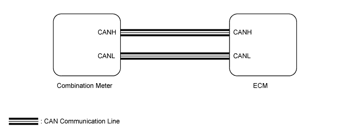

CRUISE CONTROL SYSTEM > Cruise Main Indicator Light Circuit |

| 1.PERFORM ACTIVE TEST USING INTELLIGENT TESTER (CRUISE MAIN INDICATOR LIGHT) |
Using the intelligent tester, perform the Active Test.
| Tester Display | Test Part | Control Range | Diagnostic Note |
| Indicat. Lamp Cruise | CRUISE main indicator light operation | OFF or ON | - |
| Result | Proceed to |
| OK | A |
| NG (w/ Multi-information Display) | B |
| NG (w/o Multi-information Display) | C |
|
| ||||
|
| ||||
| A | |
| 2.READ VALUE USING INTELLIGENT TESTER (CRUISE MAIN INDICATOR LIGHT) |
Using the intelligent tester, read the Data List.
| Tester Display | Measurement Item/Range | Normal Condition | Diagnostic Note |
| CCS Indicator M-CPU | CRUISE main indicator light (Main CPU) / ON or OFF | ON: CRUISE main indicator light is on OFF: CRUISE main indicator light is off | - |
| Result | Proceed to |
| OK | A |
| NG (for 2UZ-FE) | B |
| NG (for 1GR-FE) | C |
| NG (for 1VD-FTV) | D |
|
| ||||
|
| ||||
|
| ||||
| A | ||
| ||